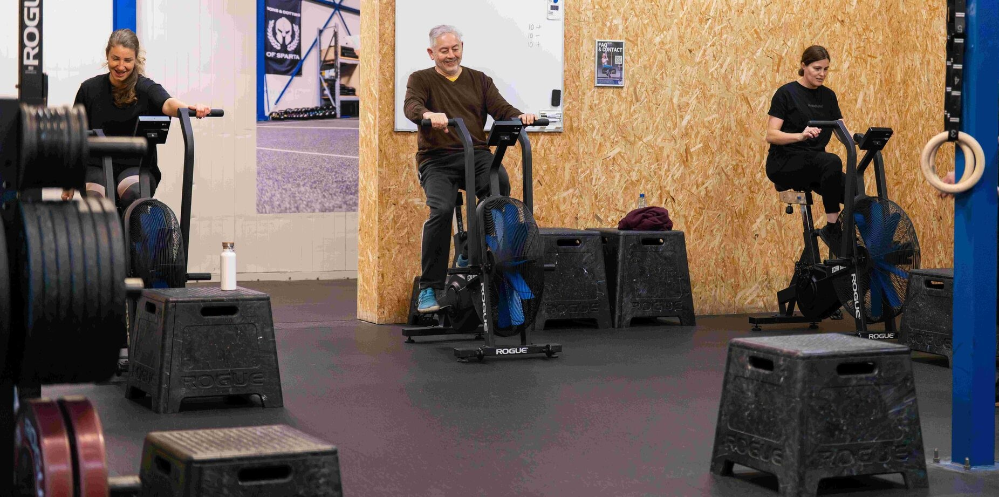

Programma · BUILD
Small Group Training
Semi-personal training in een vaste groep van zes. Geen drukke fitnessklas, geen losse personal trainer.
Wat is Small Group Training?
Small Group Training combineert het beste van twee werelden: de persoonlijke aandacht van personal training met de energie en motivatie van samen trainen. Je traint in een kleine groep van maximaal 6 personen.
Elke sessie wordt begeleid door een ervaren coach die iedereen individueel in de gaten houdt. Je krijgt feedback op je techniek en het programma wordt aangepast aan jouw niveau.
Ideaal voor mensen die meer begeleiding willen dan in een reguliere groepsles, maar ook genieten van de sociale kant van samen sporten.
We houden de groepen bewust klein. Jouw coach kent je na drie sessies: je techniek, je niveau, en wanneer je vastloopt. Dat lukt niet in een groep van dertig.

'Ik zit een stuk lekkerder in m'n vel, ik voel me fit en m'n hartslag in rust is ook omlaaggegaan!'

'Ik houd niet van fitness, dat vind ik veel te saai.'
Wat je krijgt
Maximaal 6 personen
Kleine groep betekent meer aandacht van de coach en beter zicht op je techniek.
Samen trainen, samen groeien
De energie van een groep motiveert je om net dat beetje extra te geven.
Programma op maat
Je schema bouwt op over weken en maanden. Wat je in week één doet, is de basis voor wat je in maand drie kunt.
Voordeliger dan personal training
Profiteer van persoonlijke begeleiding tegen een lagere prijs door de kosten te delen.
Veelgestelde vragen
Wat is Small Group Training bij CrossFit Alkmaar?
Wat kost Small Group Training?
Wat is het verschil met groepslessen?
Klaar om te starten?
Kom vrijblijvend kennismaken en ontdek of Small Group Training bij jou past.
Plan je kennismaking